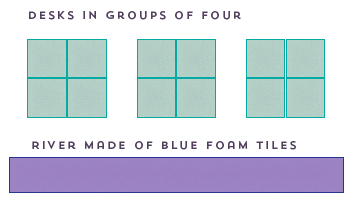
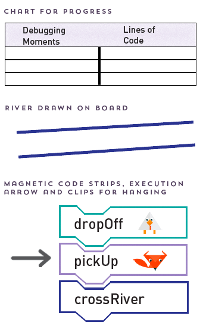

Circulate room as students answer the do now on their paper. (3 min)
Lesson 1: I am a Coder
Unplugged
Overview
In this lesson, students discover the importance of code in today’s world. Additionally, students will repeatedly encounter failure in a positive way through an interactive problem-solving game. They should begin to view failure as a step towards succeeding.
Print PDF
Agenda
- Do Now: Students write their names and their career (5 min)
- Attention Getting Signal: Teach or review your signal to move from small group to whole group (1-5 min)
- River Crossing Activity: Students repeatedly encounter failure and connect it to
progress as they solve the river crossing challenge (25-30 min)
- Introduce Challenge: Students learn what code is and understand the challenge they will be solving (5 min)
- Small Groups: Students work in groups to solve the puzzle, returning whole class every few minutes to troubleshoot together and identify their progress through failed solutions.
- Norm Building: Students reflect on how it feels to fail and create a document that outlines how they will support themselves and each other when they encounter failure in the classroom (10 min)
Vocab
Code: A set of instructions designed to be carried out by a computer
Materials
- Index Cards (class sets)
- Markers for index cards (class set)
- Code Cards (1 set for each group)
- Felt Strips (1 for each group)
- Paper River Crossing Worksheet (class set)
- Characters (1 set for each group)
- Classroom river (teal foam tiles)
- Teacher magnetic code cards & step arrow
- Teacher Magnetic Characters
- Chart paper (2 pieces)
- Sticky notes, 2 colors (class set of each color)
- Group Roles Sheet
Ideal Classroom Setup

Ideal Board Setup

Small Group Roles

Resources
Attention getting signals:
Working in groups:
Choral Response:
Do Now
Length: 5 minutes
Introductions, students make name cards you can use for cold calling.
Prep:
- Index Cards
- Pen or Pencils
| Teacher Actions | Student Actions |
|---|---|
1 | 1 Students write their name on one side of their tent and on the other side they draw or write the answer to this question: When I grow up I want to be a(n) ___. |
2 Whole group: (2 min)
| 2 Students place index cards at the top of desk. |
Attention Getting Signal
Length: 2 minutes
Teach class your attention getting signal.
| Teacher Actions | Student Actions |
|---|---|
1 There are many times during this lesson where you will need to use an attention getting signal. Use a signal that you already have or grab some ideas from our Resources. | 1 Students practice the attention getting signal. |
Crossing the River
Length: 30 minutes
River Crossing Activity: Students repeatedly encounter failure and connect it to progress as they solve the river crossing challenge.
Prep:
- Code Cards
- Felt Strips
- Paper River Crossing Worksheet
- Characters
- Classroom River
- Teacher Magnetic Code Cards & Step Arrow
- Teacher Characters
| Teacher Actions | Student Actions |
|---|---|
1 Introduce What is Code: (1 minute)
| 1 Students raise their hands to share their ideas about what is code and what is a coder.
|
2 Introduce Productive Failure: (1 minute)
| 2 Students choral respond keywords on teacher’s queue to increase engagement. |
3 Reveal the Mission: (3 minutes) A farmer needs to cross a river with a chicken, a fox, and a bag of grain. However, his boat can only hold him and one other object. If left together, the fox will eat the chicken and the chicken will eat the grain. You need to get the farmer across the river without losing any of them.
| 3 Students follow along with mission on the board and answer CFUs.
|
4 Demo a round of problem solving with roles as a whole class: (5 mins) Driver: (teacher) Ask students to propose a solution. Writer: Move the code cards to match the proposed solution. Stepper: Move the execution arrow and read each line of code one at a time. Computer: Move the magnetic pictures on the board.
| 4 Student volunteers act as: Writer: Move the code cards to match the proposed solution. Stepper: Move the execution arrow and read each line of code one at a time. Computer: Move the magnetic pictures on the board. |
5 Group Tackle: (15 minutes)
| 5 Working in groups: Students draw roles from the bags. Students follow their roles to assemble their code linearly on the felt. Groups that have the correct answer early: there are multiple solutions. Challenge them to find another solution. |
6 Come to a solution: (5 min) Call on a different group to share their solution. Follow the guidelines on whole group sharing.
| 6 One group brings solution to the board and perform it using their roles. |
7 Direct students to return materials to the envelopes. | 7 Students return materials to envelopes. |

Norm Setting
Length: 10 minutes
Students reflect on how it feels to be wrong as they set norms for how they will treat themselves and their peers when they encounter failure.
Prep:
- Sticky Notes (2 colors, class set of each color)
| Teacher Actions | Student Actions |
|---|---|
1 Whole class have students identify how it felt to get a solution wrong.
| 1 Students raise their hands to share their answers to the question. |
2 Answer questions on stickies:
| 2 Individually students answer the two questions on their sticky notes.
|
3 By the end of this activity you should have a succinct set of norms for how the class wants to be treated when they fail.
| 3 One student in each group collects the stickies and brings them up to the appropriate place on the board. Students respond with a silent thumbs up if they agree with a statement. |
4 Close out the lesson by acknowledging their great ideas and work they have accomplished. |